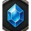

AXIE
RIFT
Đang mở vết nứt…
0%
—
LV.1
◉
Lực Chiến
0
🎁
Nhận Quà
0
⏱ --:--
🔊
0
0

0
PK: Tắt
⚔ AUTO
🗺 Bản Đồ
⏱ Sự Kiện
👁 Ẩn
Nhân Vật
Túi Đồ
Kỹ Năng
Nhiệm Vụ
⚔
Space
+
1
+
2
+
3
+
4
R
0
T
0
✋
J
⚙
Z
Tổ Đội
Hảo Hữu
Bản Đồ
Cài Đặt
≡
Menu Hệ Thống
⬆ RÚT LUI
mang kho tạm về
Nhật Ký
▾
Thế Giới
Vùng
▾
Bấm phím bất kỳ để bỏ qua
Bỏ qua ▸▸
Tiếp ▸
🧪 Chế độ thử nghiệm — vào game ở cấp tối đa, đầy đủ trang bị & mọi tính năng mở sẵn
Lunacia · Bên dưới vết nứt
Bầu trời nứt ra, và ngươi rơi qua.
Tên nhân vật
🎲
Chế độ thử nghiệm — vào game ở cấp tối đa, đầy đủ trang bị & vật liệu
Tạo Nhân Vật
Vào Game
Tạo Nhân Vật Mới
← Quay Lại Danh Sách